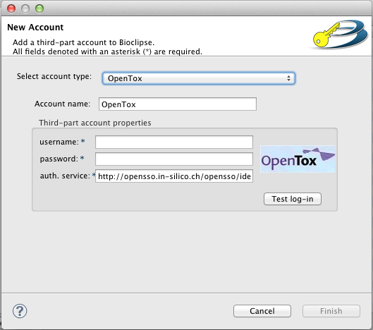

Install OpenTox in Bioclipse
When the OpenTox feature is installed, which most likely is the case if you read this, you will also need a login to the OpenTox web-services. If you don't have that you can register here.
Bioclipse handles that as an account under your user account (Don't have any? Don't worry, just continue reading and we sort it out). To create this OpenTox-account, choose File > New... and select General > Account in the tree-menu that appears. Then click next, now you will be asked to login to your Bioclipse user account, or if there's no user account yet to create one. You can read more about Bioclipse user account in Bioclipse user account then the Bioclipse user manual. Fill in your username and password and click on the Next-button.

The next page should look simular to the picture to the right, make sure that "OpenTox" is selected in the drop-down menu. Fill in your OpenTox username and password in the respective text-boxes. If you for some reason want to use an other OpenSSO than the default you may change that in the text-box with the text "auth. service" (short for "authorization service") in front. You may also choose an own name for your account, this is done in the text-box just beneath the drop-down menu.
When you are satisfied with your settings press the Finish-button, and if everything goes well the padlock in the bottom of the Bioclipse window turns green. If for some reason it doesn't, please check the settings of your account in preferences. For more information check the section OpenTox preferences or the more general Using preferences in the Bioclipse users manual/Bioclipse user account.